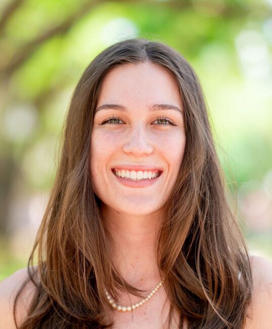
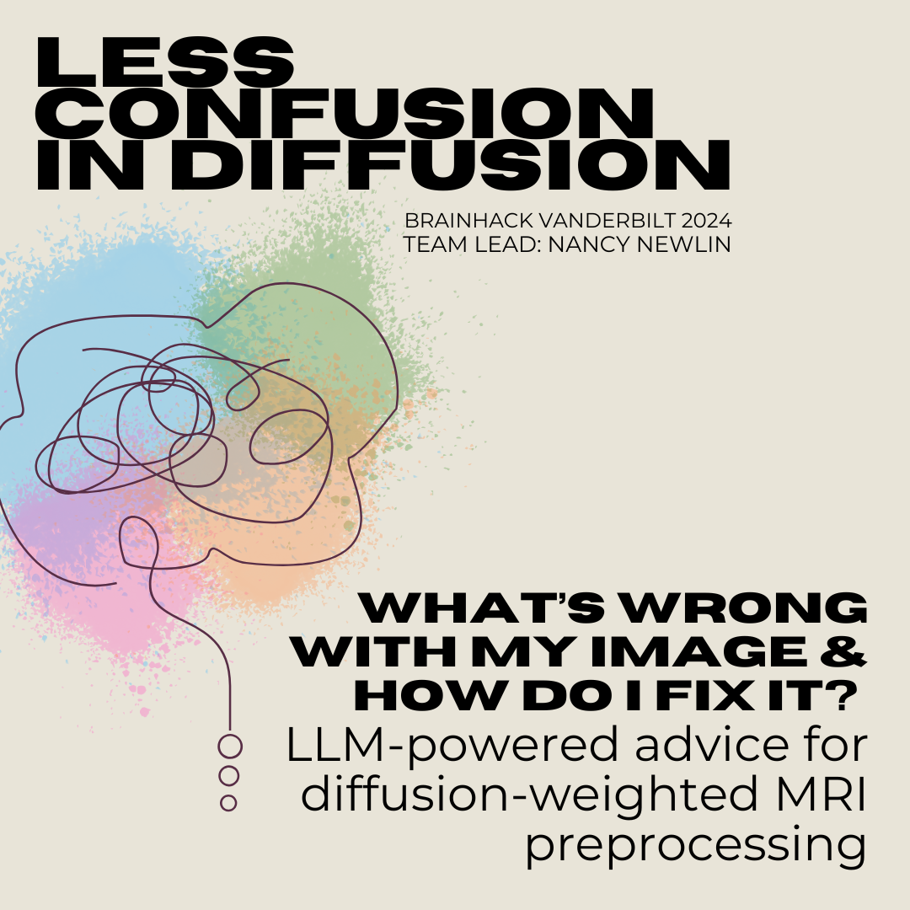
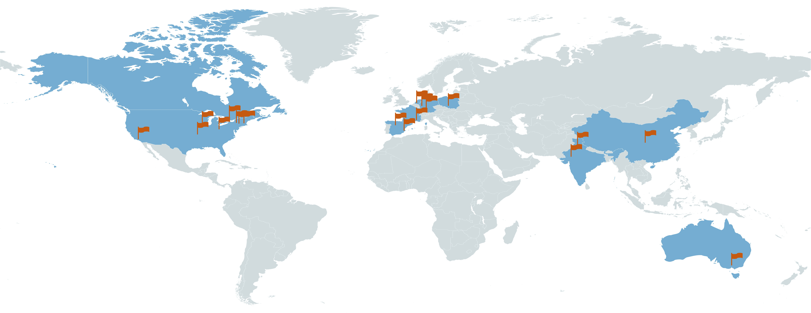
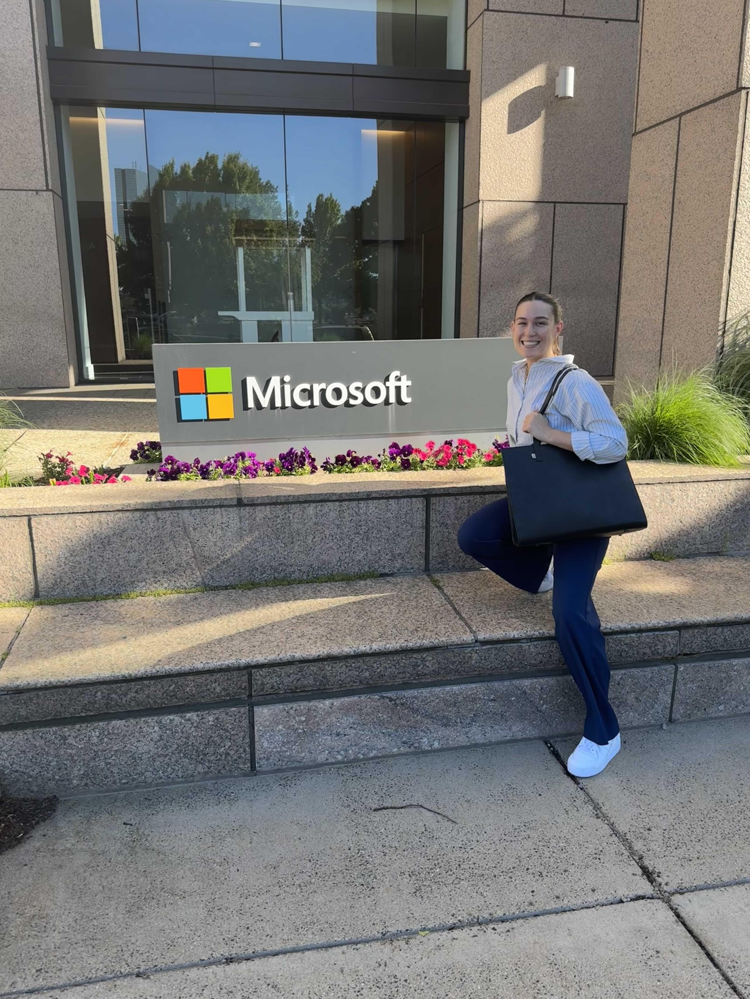
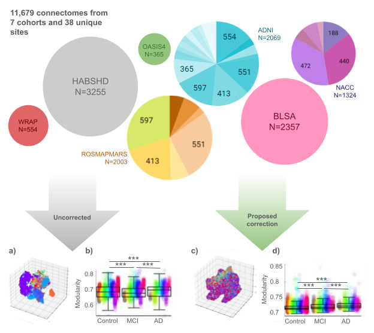
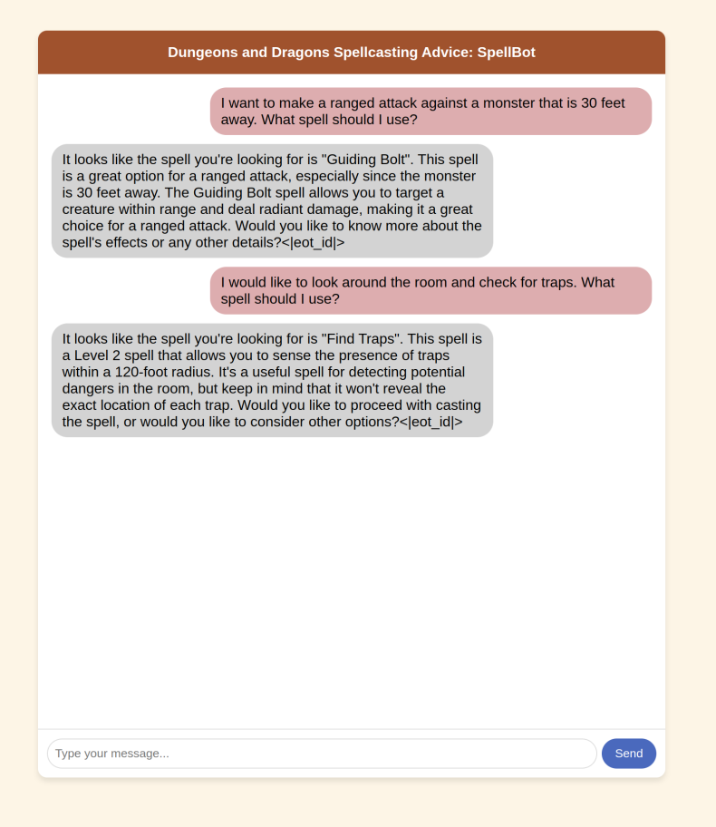

Nancy Rose Newlin
nrn616@gmail.com


nrn616@gmail.com


Hello! I'm Nancy, a PhD Candidate studying at Vanderbilt University. My primary research experience is in neuroimaging, large-scale image processing, and machine learning. I am looking for full-time research/applied scientist positions where I can expand my knowledge of AI/ML! I have passion for collaboration, image processing, and curiosity for the intersection of AI, imaging, and practical technology. This website showcases some of my work and skills.
On a more personal note, I'm a huge coffee-shop & reading enthusiast. In my free time I like to workout, walk, and play games with friends (dungeons & dragons, minecraft).


As a Project Lead at the BrainHack hackathon, I proposed a project and led a team of 10 to implement a vision language model to identify imaging artifacts in diffusion-weighted images. I curated and labeled a dataset of 80 thousand image slices. Then, during the 48-hour hackathon I steered the team to choose a HuggingFace model (BiomedCLIP), perform zero-shot inference, then improve on the model with fine-tuning. We polished the project with a GUI and github documentation.
View on GitHub
Managed, organized, and presented an international community data challenge, Quantitative Connectivity through Harmonized Preprocessing of Diffusion MRI (QuantConn). My role as lead organizer was to advertise, communicate with participants, release and QA the dataset, then develop the public testing framework, process all submissions, and present on our findings. The challenge had 22 teams from across the globe register and resulted in 10 unique submissions when the competition closed in September 2023. This work resulted in a Machine Learning for Biomedical Imaging (MELBA) article.
View on GitHub
Over the 12-week internship, I mobilized this project from hypothesis to functioning prototype and gave a capstone seminar to 25 industry professionals. Our team leveraged unique features of CT medical images to enhance attention models (transformers/UNETr).

My research harnesses representation learning to study brain networks in aging and Alzheimer’s disease populations leveraging multi-modal datasets of over 30,000 patients. We synthesize nine cohorts and 35 unique diffusion-weighted imaging acquisitions (for a total of 38 imaging “sites”) into a cohesive dataset of 6,956 persons (16.4% with mild-cognitive impairment and 10.7% with AD) imaged for 1 to 16 sessions for a total of 11,927 diffusion-weighted imaging (DWI) sessions. We design a conditional-variational autoencoder that extracts lower dimensional representations of structural connectivity invariant to imaging cohort, geographical location, scanner, and acquisition factors. Our method out-performs the ComBat baseline method at reducing site-effects while preserving biological variation. Using these representations, we remove significant (p<0.05) site effects in 12 network connectivity measures of interest (integration, centrality, resiliency, modular structure, and segregation) and enhance prediction of cognitive diagnosis (from 68% accuracy to 73% accuracy).
View on GitHub
A simple chatbot that uses retrieval augmented generation to give me personalized spellcasting advice for my Dungeons and Dragons character. This is a personal project I put together that uses Llama-3.2 in a chatbot setting. The responses are supplemented with a dataset I put together with spell information (range, effects). I also put together a simple UI to interact with the chatbot.
View on GitHubHere are some of my favorite things! Graphic design, social media for Women of VISE, my dog, travel, and food :)